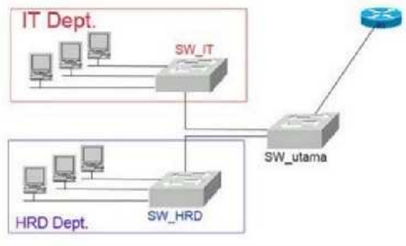
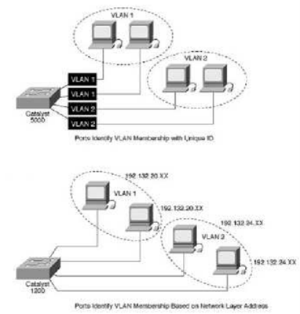

VLAN merupakan suatu model jaringan yang tidak terbatas pada lokasi fisik seperti LAN, hal ini mengakibatkan suatu network dapat dikonfigurasi secara virtual tanpa harus menuruti lokasi fisik peralatan. Penggunaan VLAN akan membuat pengaturan jaringan menjadi sangat fleksibel dimana dapat dibuat segmen yang bergantung pada organisasi atau departemen, tanpa bergantung pada lokasi workstation seperti pada gambar berikut.


Beberapa keuntungan penggunaan VLAN antara lain:
VLAN diklasifikasikan berdasarkan metode (tipe) yang digunakan untuk mengklasifikasikannya, baik menggunakan port, MAC addresses dan sebagainya. Semua informasi yang mengandung penandaan atau pengalamatan suatu VLAN (tagging) disimpan dalam suatu database (tabel), jika penandaannya berdasarkan port yang digunakan maka database harus mengindikasikan port-port yang digunakan oleh VLAN.
Untuk mengaturnya maka biasanya digunakan switch atau bridge yang manageable atau yang bisa diatur. Switch atau bridge inilah yang bertanggung jawab menyimpan semua informasi dan konfigurasi suatu VLAN dan dipastikan semua switch atau bridge memiliki informasi yang sama. Switch akan menentukan kemana data-data akan diteruskan. Untuk menghubungkan antar VLAN dibutuhkan router.
Keanggotaan dalam suatu VLAN dapat diklasifikasikan berdasarkan port yang digunakan, MAC address, tipe protokol.
Keanggotaan pada suatu VLAN dapat didasarkan pada port yang digunakan oleh VLAN tersebut.
| Port | 1 | 2 | 3 | 4 |
|---|---|---|---|---|
| VLAN | 2 | 1 | 1 | 2 |
Pada tabel 10.1 bridge atau switch dengan 4 port, port 1 dan 4 merupakan VLAN 2 sedang port 2 dan 3 dimiliki oleh VLAN 1. Kelemahannya adalah user tidak bisa untuk berpindah-pindah, apabila harus berpindah maka Network administrator harus mengkonfigurasikan ulang.
Keanggotaan suatu VLAN didasarkan pada MAC address dari setiap workstation atau komputer yang dimiliki oleh user. Switch mendeteksi atau mencatat semua MAC address yang dimiliki oleh setiap Virtual LAN.
Kelebihannya apabila user berpindah-pindah maka dia akan tetap terkonfigurasi sebagai anggota dari VLAN tersebut. Sedangkan kekurangannya bahwa setiap mesin harus dikonfigurasikan secara manual, dan untuk jaringan yang memiliki ratusan workstation maka tipe ini kurang efisien.
| MAC Address | 244441 25556 | 132516 617738 | 272389 579355 | 536666 337777 |
|---|---|---|---|---|
| VLAN | 1 | 2 | 2 | 1 |
Keanggotaan VLAN juga bisa berdasarkan protokol yang digunakan.
| Protokol | IP | IPX |
|---|---|---|
| VLAN | 1 | 2 |
Subnet IP address pada suatu jaringan juga dapat digunakan untuk mengklasifikasi suatu VLAN.
| IP Subnet | 22.3.24 | 46.20.45 |
|---|---|---|
| VLAN | 1 | 2 |
Konfigurasi ini tidak berhubungan dengan routing pada jaringan. IP address digunakan untuk memetakan keanggotaan VLAN. Keuntungannya seorang user tidak perlu mengkonfigurasikan ulang alamatnya apabila berpindah tempat, hanya saja karena bekerja di layer yang lebih tinggi maka akan sedikit lebih lambat dibanding menggunakan MAC addresses.
Sangat dimungkinkan untuk menentukan suatu VLAN berdasarkan aplikasi yang dijalankan, atau kombinasi dari semua tipe di atas. Misalkan: aplikasi FTP hanya bisa digunakan oleh VLAN 1 dan Telnet hanya bisa digunakan pada VLAN 2.
2026